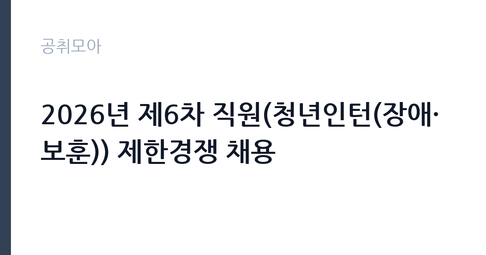

[공공기관] 2026년 제6차 직원(청년인턴(장애·보훈)) 제한경쟁 채용
한국교육학술정보원 · 대구 · 마감 2026-10-06 (D-14) · 출처 나라일터

한눈에 보는 모집 조건
| 기관 | 한국교육학술정보원 |
|---|---|
| 공고명 | 2026년 제6차 직원(청년인턴(장애·보훈)) 제한경쟁 채용 |
| 고용형태 | 청년인턴(체험형) |
| 근무지 | 대구 |
| 게시일 | 2026-09-22 |
| 마감일 | 2026-10-06 (D-14) |
지원자격, 이렇게 읽으세요
- 인턴 10명
- 접수 ~2026-10-06 마감
- 세부 조건은 원문 공고문 확인
모집 분야는 행정지원(장애)과 행정지원(보훈)으로, 각 전형의 해당 요건을 충족해야 합니다. 장애 전형은 장애인고용법의 기준에 따른 장애인, 보훈 전형은 보훈 관계법률의 취업지원대상자가 지원 대상입니다. 청년인턴이라 연령 요건도 함께 적용되므로 세부 자격은 원문에서 확인하시기 바랍니다. 증빙서류를 미리 발급받아 두시기 바랍니다.
이 공고의 포인트
첫 번째 포인트는 10명 선발의 비교적 큰 규모라는 점입니다. 제한경쟁이라 해당 조건의 지원자만 응시해 기회가 넓습니다. 두 번째로 한국교육학술정보원은 교육정보화와 이러닝, 교육학술정보를 맡는 기관으로, 교육 분야 공공기관 경험을 쌓기에 좋습니다. 세 번째로 대구 근무라 해당 지역 청년에게 적합합니다. 장애·보훈 청년 구직자에게 좋은 기회입니다.
전형은 어떻게 진행되나
전형은 서류전형과 면접전형으로 진행되는 것이 일반적이며, 세부 일정은 원문 공고에서 확인하시기 바랍니다. 응시방법은 온라인 지원페이지를 통한 접수이며, 마감일 14시까지 등록분에 한합니다. 마감일 오후에는 접속이 몰릴 수 있으니 미리 접수하시기 바랍니다.
원문에서 확인한 전형 방식
○ 모집분야 : 행정지원(장애), 행정지원(보훈) ○ 채용인원 : 총 10명 ○ 선발직급 : 인턴 ○ 고용형태 : 청년인턴 ○ 접수기간 : 2026년 9월 22일 ~ 2026년 10월 6일 14시 ※ 마감일 14시까지 등록분에 한함 ○ 응시방법 : 온라인 지원페이지를 통한 접수(https://keris.recruiter.co.kr) ○ 문의처 : 070-4012-6067(채용 콜센터)
이런 분께 추천해요
- 교육 분야 공공기관 인턴 경험을 쌓고 싶은 장애·보훈 청년
- 대구 근무가 가능한 구직자
- 행정지원 실무로 향후 정규직에 도전하려는 분
지원 전 체크리스트
- 장애·보훈 전형의 해당 여부와 증빙서류를 확인했습니다
- 온라인 지원페이지의 입력 항목을 미리 살펴보았습니다
- 마감일 14시 등록 기준을 확인했습니다
- 자기소개서를 준비했습니다
모집 일정과 제출 타이밍
접수 기간은 9월 22일부터 10월 6일 14시까지입니다. 마감 시각이 오후 2시로 이른 편이니 주의하시기 바랍니다. 서류 합격자 발표와 면접 일정은 기관 안내에 따르시기 바랍니다. 추석 연휴가 포함될 수 있으니 연휴 전에 지원서를 완성해 두시기 바랍니다.
직무 이해하기: 공공기관
청년인턴은 교육학술정보원의 각 부서에서 행정지원 업무를 맡습니다. 문서 작성과 자료 정리, 사업 지원 등의 실무를 경험합니다. 대구에서 근무하며, 공공기관 카테고리의 청년인턴 공고입니다. 행정지원 인턴은 부서별 문서와 회의 지원, 사업 자료 정리, 민원 응대 보조 등을 맡습니다. 교육정보화 사업의 현장을 가까이에서 지켜보며 실무 감각을 키울 수 있습니다.
자기소개서 작성 팁
자기소개서에서는 교육정보화에 대한 관심과 행정지원 역량을 구체적으로 기술하시기 바랍니다. 관련 경험과 OA 활용 능력을 사례와 함께 제시하시기 바랍니다. 인턴으로서 배우고 기여하겠다는 자세를 진정성 있게 서술하시기 바랍니다.
면접 준비 포인트
면접에서는 지원 동기와 조직 적응력을 질문받을 가능성이 큽니다. 교육학술정보원의 주요 사업을 미리 살펴보고 본인의 생각을 정리해 두시기 바랍니다. 밝고 성실한 태도로 임하시기 바랍니다.
급여·근무조건 읽는 법
보수 수준은 원문 공고문에서 확인하셔야 합니다. 교육학술정보원 청년인턴의 급여는 기관 내규에 따른 인턴 보수 기준이 적용됩니다. 정확한 월 지급액과 4대 보험 적용 여부는 원문에서 확인하시기 바랍니다. 청년인턴의 처우에는 월 보수 외에 4대 보험과 연차, 교육 기회 등이 포함되는 것이 일반적입니다. 정확한 조건은 원문 공고문에서 확인하시기 바랍니다.
자주 묻는 질문
- 누가 지원할 수 있습니까
행정지원(장애) 전형은 장애인, 행정지원(보훈) 전형은 취업지원대상자가 지원하실 수 있습니다. 청년인턴 연령 요건도 함께 적용되니 원문에서 확인하시기 바랍니다. - 모집인원이 몇 명입니까
총 10명을 선발합니다. 전형별 인원은 원문 공고문에서 확인하시기 바랍니다. - 접수 마감이 언제입니까
10월 6일 14시까지 등록분에 한합니다. 마감일 오후 접속 지연에 대비해 미리 접수하시기 바랍니다.
함께 보면 좋은 공고
[공공기관] 한국연구재단 PM(기초연구본부장) 초빙 재공고 — 마감 2026-10-13[공공기관] 칠곡경북대학교병원 2026년 9월 5차 임시직원 채용공고(물리치료사, 간호사, 주차, 조경관리) — 마감 2026-09-28[공공기관] [KDI국제정책대학원] 2026년 제10차 인턴직원 채용(경영기획) — 마감 2026-10-08출처: 나라일터 공개정보를 바탕으로 공취모아가 정리한 안내글입니다. 모집 조건·일정은 변경될 수 있으니 지원 전 반드시 원문 공고문을 확인하세요. 본 글은 정보 제공용이며 합격을 보장하지 않습니다.